Настройка интеграции IP-АТС Yeastar S серии с Битрикс24 при помощи сервиса Callbee
Info
Для подключения интеграции необходимо поочередно выполнить пункты данного руководства в той последовательности, как они описаны.
Необходимые требования
- IP-АТС серии S серии (S20, S50, S100, S300).
- Статический IP адрес (необходимо приобрести у вашего интернет-провайдера).
- Облачный или коробочный Битрикс24 любой редакции.
- Для коробочного Битрикс24 необходим валидный SSL сертификат.
Важные замечания
- Интеграция поддерживает внутренние номера до 4-х знаков включительно.
- Интеграция не преобразует формат телефонных номеров, необходимо работать в международном формате как в Битрикс24, так и на АТС.
Работа интеграции
Интеграция реализует связь по AMI протоколу с вашей IP-АТС Yeastar S серии и REST API вашего Битрикс24, а также осуществляет на стороне нашего сервера конвертацию файлов аудиозаписей разговоров из формата wav (записи разговоров создаются на IP-АТС Yeastar только в формате wav) в формат mp3.
Важно понимать, что голосовой SIP трафик за рамки вашей АТС никуда не выходит.
Интеграция взаимодействует с Битрикс24 по REST API: отправляет запросы на поднятие карточки звонка, проверку номера телефона и проброс записи разговора с АТС.
1. Настройка IP-АТС Yeastar
1.1 Настройка сетевых служб
Открываем админ панель АТС и переходим в раздел Настройки - Система – Безопасность далее переходим во вкладку Сетевые службы и настраиваем следующее:
для Yeastar S20
- Активируем пункт Включить FTP
- Активируем пункт Включить TFTP
для Yeastar S50/S100/S300
- Меняем протокол с HTTPS на HTTP
Смену протокола следует производить если не установлен валидный сертификат
- Активируем пункт Включить AMI
- Изменяем стандартные Имя пользователя и Пароль (эти имя пользователя и пароль нужно будет прописать в личном кабинете Callbee)
- В появившемся поле Разрешённые IP/Маска прописываем IP адреса: 89.108.65.246, 31.24.92.54 и 46.101.225.17 с маской 255.255.255.255
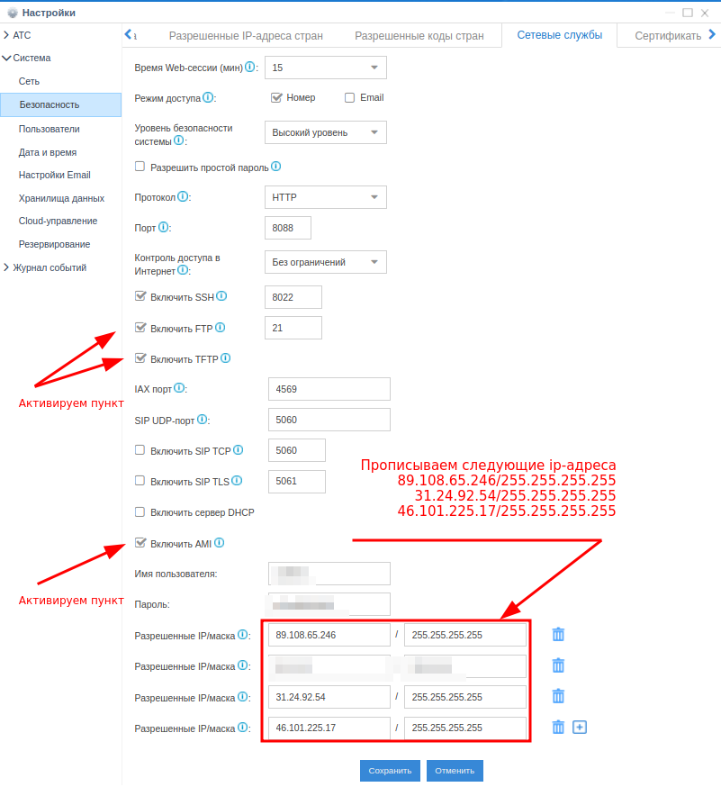
1.2 Настройка хранилища данных
для Yeastar S20
Переходим в раздел Настройки - Система - Хранилища данных и переходим во вкладку File Share:
- Активируем Активировать FTP доступ
- Активируем Активировать файловое хранилище

1.3 Настройка API
для Yeastar S50/S100/S300
Переходим в раздел Настройки АТС - Настройки АТС - API:
- Активируем API
- Активируем пункт Монитор АТС всех номеров и линий

2. Сетевые настройки
Для того, чтобы интеграция могла подключится к вашей АТС, у вас обязательно должен быть статический IP адрес и проброшены через NAT к АТС следующие порты:
- 5038 TCP – для доступа к AMI Yeastar
- 21 TCP – для доступа к FTP Yeastar (для Yeastar S20)
- 8088 (порт к WEB интерфейсу по умолчанию) HTTP/HTTPS – для доступа к API Yeastar
Info
Интерфейс настройки проброса портов сильно отличается в зависимости от используемого в вашей сети маршрутизатора. Актуальную инструкцию по пробросу портов под ваш маршрутизатор вы можете найти на официальном сайте производителя маршрутизатора.
3. Первичная настройка Битрикс24
3.1 Установка приложения
Войдите в свой корпоративный портал Битрикс24 пользователем с правами администратора.
- В меню Битрикс24 перейдите на страницу Приложения выберите категорию IP-телефони и найдите приложение Callbee
- Перейдите на страницу приложения Callbee и нажмите кнопку Установить
- Далее необходимо ознакомиться и согласиться с лицензионным соглашением и политикой конфиденциальности, отметив эти пункты, и нажать кнопку УСТАНОВИТЬ
Сallbee в каталоге приложений Битрикс24
3.2 Настройка внутренних номеров пользователей
- Перейти на страницу Сотрудники
- Открыть профиль Сотрудника
- Внести внутренний телефон сотрудника
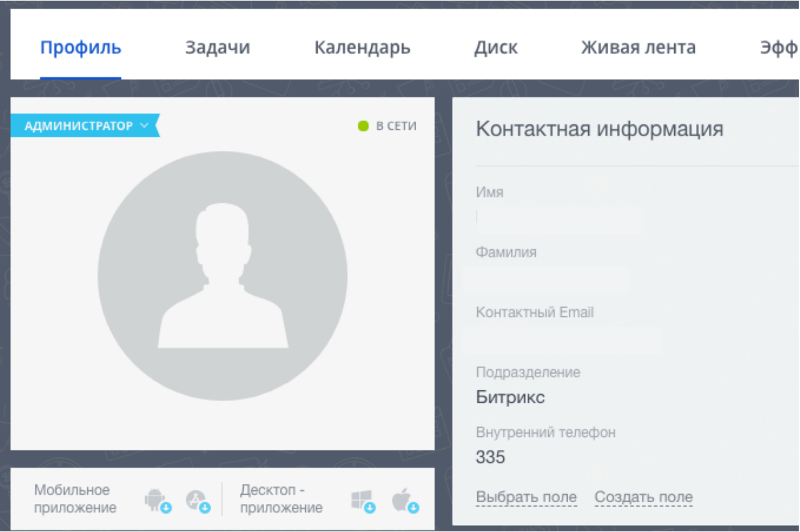
4. Настройка интеграции в личном кабинете сервиса Callbee
После проведения всех настроек описанных выше необходимо произвести подключения интеграции.
4.1 Подключение интеграции на стороне сервиса Callbee вручную
-
Нажмите кнопку BITRIX24 WITH YEASTAR «Install»

-
Заполните все необходимые пункты для интеграции

-
Bitrix24 Domain (1) - Указываем доменное имя вашего Битрикс24 (без https://)
- Yeastar AMI host (2) - Указываем ваш статический IP адрес для подключения к AMI Yeastar
- Yeastar AMI port (3) - Указываем ваш порт для подключения к AMI Yeastar (стандартный порт AMI 5038)
- AMI username (4) - Указываем имя пользователя AMI Yeastar
- AMI secret (5) - Указываем пароль AMI Yeastar
-
Region (6) - Выбор ближайшего региона для подключения Yeastar
Info
Данная функция обеспечивает наилучшую скорость взаимодействия Yeastar с сервисом CallBee
На выбор доступны три региона:
- Russia - подключение к узлу с интеграцией, расположенного в Российской Федерации 89.108.65.246
- Belarus - подключение к узлу с интеграцией, расположенного в Республике Беларусь 31.24.92.54
- Germany - подключение к узлу с интеграцией, расположенного в Германии 46.101.225.17
- AUTO - автоматическое подключение к любому узлу
Важное замечание
- При выборе режима AUTO в настройках безопасности станции необходимо добавить все адреса из списка ip-адресов сервиса в доверенные (см. пункт 1.1 Настройка сетевых служб)
- Адрес 89.108.65.246 должен быть добавлен в доверенные вне зависимости от региона (с этого IP адреса совершается звонок по клику из битрикс24)
4.2 Подключение интеграции на стороне сервиса Callbee через установщик
- Нажмите «Install Integration»

- Выберите Bitrix24 в поле CRM
- Выберите Yeastar в поле Platform
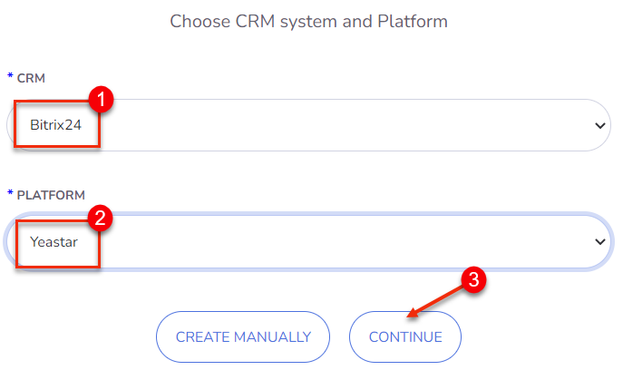
- Заполните все необходимые поля
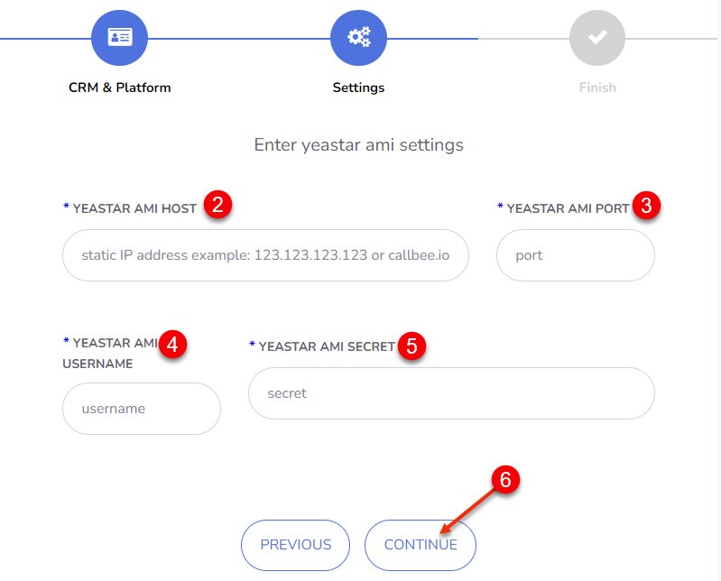
- Yeastar AMI host (2) - Указываем ваш статический IP адрес для подключения к AMI Yeastar
- Yeastar AMI port (3) - Указываем ваш порт для подключения к AMI Yeastar (стандартный порт AMI 5038)
- AMI username (4) - Указываем имя пользователя AMI Yeastar
- AMI secret (5) - Указываем пароль AMI Yeastar
4.3 Настройка записей разговоров
- Установите переключатель FTP/API (7) в нужное положение в завимисти от модели станции Yeastar
- FTP (для Yeastar S20) / API (для Yeastar S50/S100/S300) (7) - положение зависит от модели станции
-
Convert to mp3 (8) - Конвертация записи в mp3
для Yeastar S20
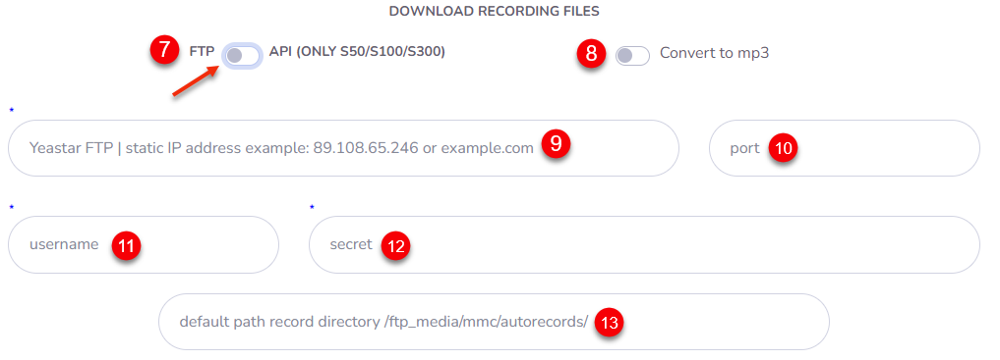
- FTP host (9) - ваш статический IP адрес для подключения к FTP Yeastar
- FTP port (10) - ваш порт для подключения к FTP Yeastar (стандартный порт FTP 21)
- FTP username (11) - имя пользователя к FTP Yeastar как у службы SSH (по умолчанию support)
- FTP secret (12) - пароль к FTP Yeastar как у службы SSH (активируем деактивируем SSH, чтобы посмотреть пароль)
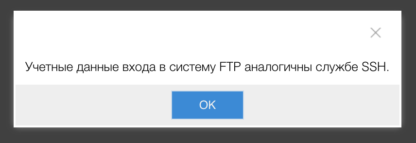
- Path records directory (13) - если оставить поле пустым, будет использоваться стандартный путь для хранении файлов записей разговоров /ftp_media mmc/autorecords/
для Yeastar S50/S100/S300
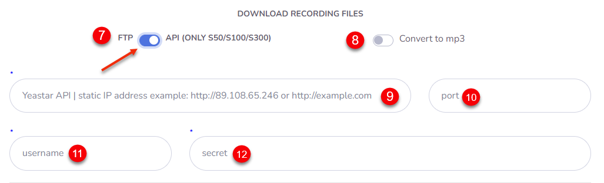
- API host (9) - ваш статический IP адрес для подключения к API Yeastar
- API port (10) - ваш порт для подключения к API Yeastar
- API username (11) - имя пользователя к API Yeastar
- API secret (12) - пароль к API Yeastar
Важное замечание
-
При трансфере звонка без сопровождения (слепом) будет записана только вторая часть разговора (со вторым поговорившим), соответственно первая часть разговора (с первым поговорившим) не будет сохранена, даже если включена настройка записи целой линии.
-
При трансфере звонка с сопровождением будет корректно записан весь разговор (необходимо чтобы была включена запись линии) и проброшен в CRM на последнего поговорившего в версии интеграции начиная с v2.0.
Данное замечание связано с особенностями работы станций Yeastar
4.4 Настройка интеграции на стороне сервиса Callbee для каждой линии АТС в отдельности (доступно в pro-версии и demo-режиме)
- Заполните необходимые поля
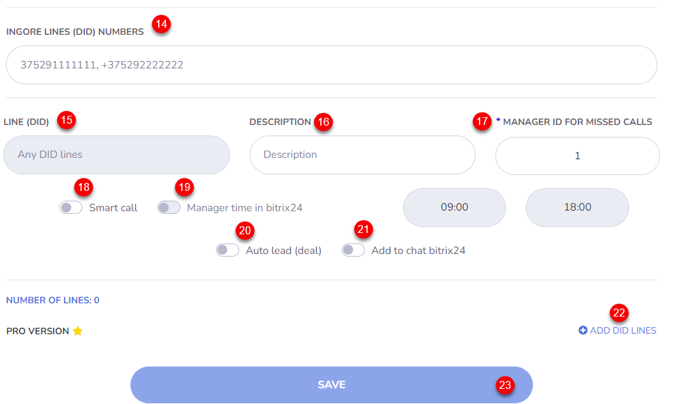
- Ignore Lines (DID) Numbers (14) - Указываем DID номер(а) через запятую и один пробел, на которые интеграция не будет реагировать. Эта функция позволяет не реагировать на номера, не относящиеся к работе в CRM. Например прямые номера бухгалтерии или администрации.
- Line (DID) (15) - Номер подразделения отдела. Номер для входящих звонков, который относится к подразделению/отделу (номер берется из настроек FreePBX поля DID Number )
- Description (16) - Описание линии (DID), будет заполнять поле Линия в карточке Контакта и Сделки в Битрикс24, если оставить поле Description пустым будет проброшен номер линии (DID)
-
Manager ID For Missed Calls (17) - ID пользователя в Битрикс24 для пропущенных вызовов (ответственный пользователь за пропущенные вызовы для новых клиентов, которых нет в Битрикс24). Можно устанавливать для каждой линии свое значение. Это поле не должно быть пустым!
Info
Посмотреть какой Manager ID можно открыв профиль сотрудника в Битрикс24 в адресной строке Вашего браузера
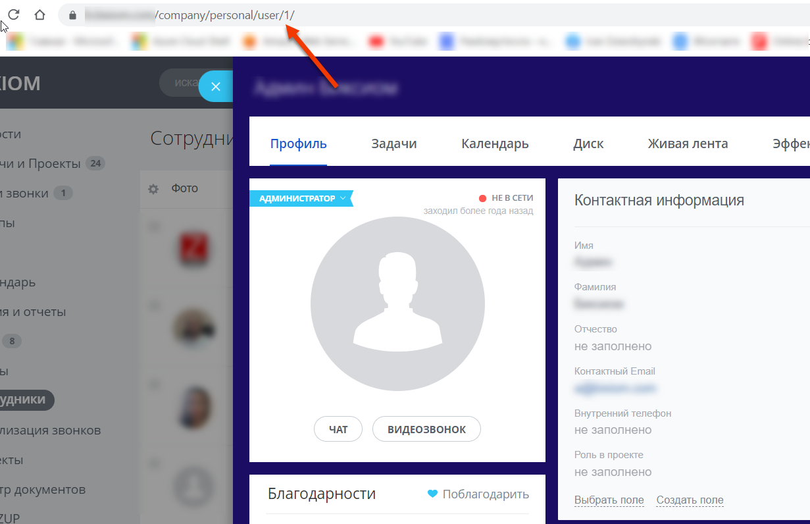
На скриншоте выше значение Manager ID равно 1 -
Smart Call (18) - Включение умной маршрутизации (перевод звонка на ответственного сотрудника) с указанием времени работы. Вне графика работы умной маршрутизации звонок будет идти по маршруту по умолчанию. Чаще всего применяется для того, чтобы проиграть клиенту сообщение о том, что он дозвонился в нерабочее время.
- Manager time in bitrix24 (19) - Включение графика работы для умной маршрушизации из Битрикс24
- Auto Lead (Deal) (20) - Включение автоматического создания лидов или сделок (+контакт) Битрикс24 (в зависимочсти от режима работы Битрикс24)
- Add to chat bitrix24 (21) - Включение отображения информации о всех звонках в чате Битрикс24
- Add DID Lines (22) - Добавление линии для настройки
- SAVE (23) - Сохранение настроек интеграции
4.5 Настройка интеграции на стороне сервиса Callbee для каждого внутреннего номера.
Важное замечание
Для настройки внутренних номеров через сервис CallBee нужно включить переключатель «Use B24 users table»
- Заходим в настройки интеграции, нажимаем «Settings»

- Включаем переключатель «Use B24 users table»

- После включения «Use B24 users table» появится пункт меню «Bitrix24 users», переходим в него

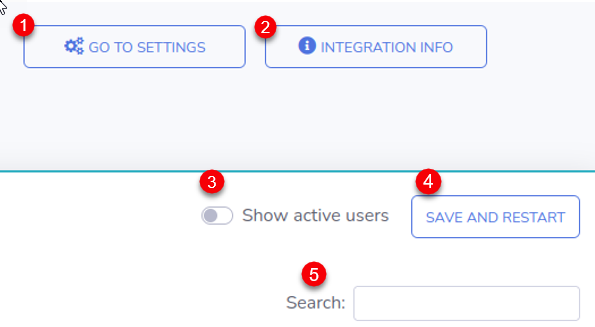

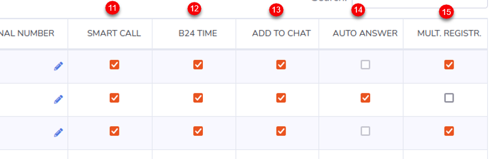
- Go to settings (1) - Переход на страницу настроек
- Integration Info (2) - Информация о интеграции
- Show active users (3) - Фильтр для отображения активных пользователей
- Save and restart (4) - Сохранение настроек и перезапуск интеграции
- Search (5) - Поиск записей в таблице настроек
- Active (6) - Включение настроек для пользователя (сотрудника) через сервис CallBee. Акитвация коммерческой лицензии для этого пользователя (актиных пользователей должно быть не больше количества лицензий) Если переключатель стоит в режиме off то интеграция будет игнорировать это пользователя, даже если у него прописан внутренний номер и заполнены все остальные поля.
- Bitrix ID (7) - ID пользователя (сотрудника) в Битрикс24
- Name (8) - Имя пользователя (сотрудника) в Битрикс24
- Internal Number (9) - Внутренний номер пользователя (сотрудника)
- External Number (10) - Личный номер пользователя (сотрудника) что будет совершать звонки по клику из Битрикс24 на мобильном устройстве. При звонке по клику на мобильном устройстве будет осуществляться вызов в обе стороны - пользовтателю (сотруднику) и клиенту Вашей компании. Номер используется для взаимодействия приложения Битрикс24 на мобильном устройстве и осуществления вызовов звонком по клику.
- Smart Call (11) - Включение умной маршрутизации (перевод звонка на ответственного сотрудника) с указанием времени работы. Вне графика работы умной маршрутизации звонок будет идти по маршруту по умолчанию. Чаще всего применяется для того, чтобы проиграть клиенту сообщение о том, что он дозвонился в нерабочее время.
- B24 Time (12) - Включение графика работы для пользователя (сотрудника) из Битрикс24 для умной маршрутизации
- Add to Chat (13) - Включение отображения информации о всех звонках в чате Битрикс24
- Auto Answer (14) - Включение автоответа на SIP-телефоне, (аппаратном или программном (софтфон). При звонке по клику с использованием сервиса CallBee первоначально звонок приходит как входящий на SIP-телефон (аппаратный или программный) и после его приема происходит исходящий вызов клиенту Вашей компании. Включение данной функции позволит SIP-телефону (аппаратному или программному) принимать звонок автоматически, без участия пользователя (сотрудника). В том случае если SIP-телефон (аппаратный или программный) поддерживает данный фуннкционал (например SIP-телефоны Yealink с актуальной прошивкой)
- Multiple Registration (15) - Включение функции Multiple Registration позволяет пользоваться звонком по клику при наличии нескольких SIP-телефонов (аппаратных или программных)
Важное замечание!
Перед сохранением всех настроек при первом подключении интеграции необходимо в соседней вкладке вашего браузера войти в Битрикс24 с правами администратора.
5. Дальнейшая настройка Битрикс24
5.1 Настройка телефонии в Битрикс24
-
В меню Битрикс24 перейдите на страницу «Телефония»
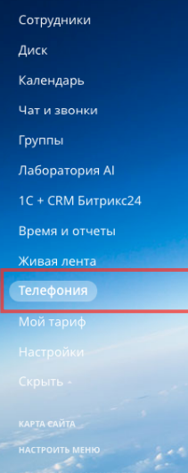
-
Далее выбрать «Настройка телефонии» (1)
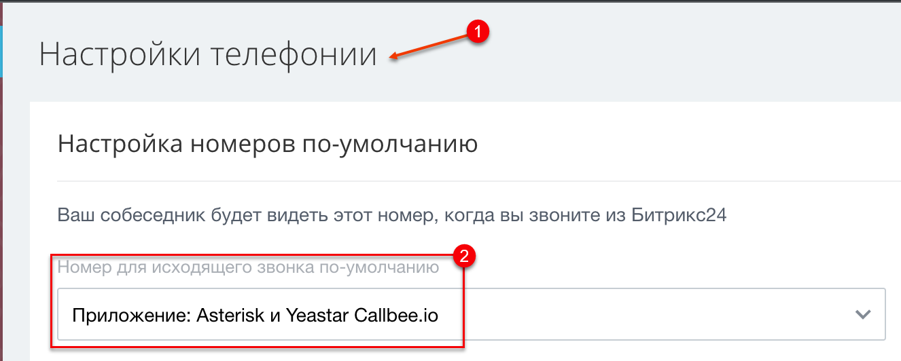
- Настройках телефонии необходимо выбрать в пункте «Номер для исходящего звонка по-умолчанию (2)» -> «Приложение Asterisk и Yeastar Callbee.io»
Далее нажимаем «Сохранить»
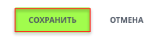
Настройка интеграции завершена!